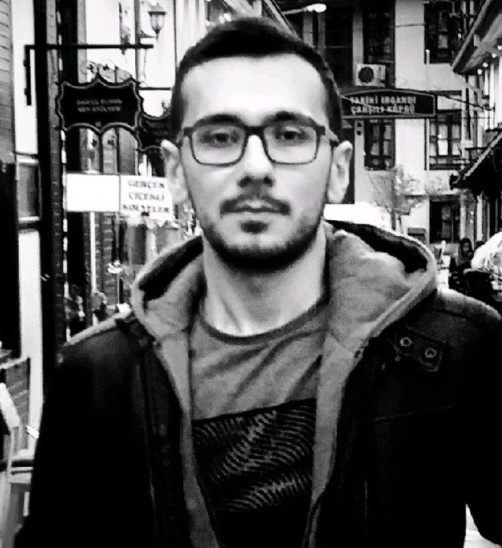
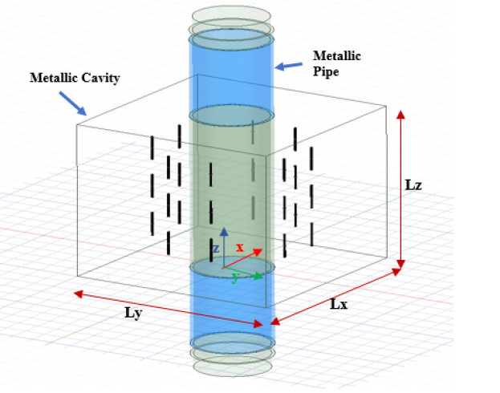
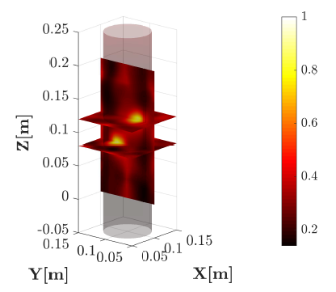
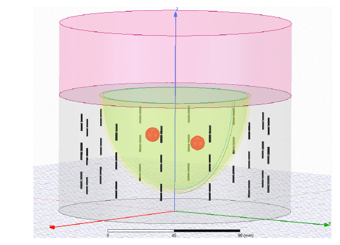
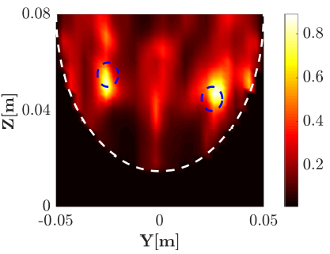
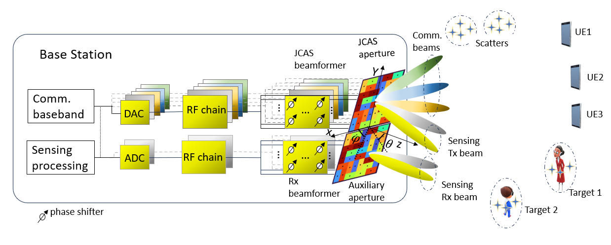

RF & Wireless Systems Engineer | Radar Systems | Ultrasonics | Signal Processing
I am an RF and Wireless Systems Engineer with a PhD in Electrical Engineering from the University of Twente. My research focuses on Joint Communication and Sensing (JCAS), phased arrays, beamforming, radar systems, ultrasonic imaging, and optimization algorithms for advanced sensing and wireless communication platforms.
Download CVDeveloped microwave imaging systems for industrial monitoring and biomedical applications using inverse scattering methods, HFSS electromagnetic simulations, phased antenna arrays, and qualitative reconstruction algorithms.
The project included microwave pipeline monitoring, breast tumor imaging, cavity-based sensing systems, and multifrequency electromagnetic imaging techniques.
View Master Thesis
Anysy HFSS simulation of cavity-based microwave imaging system

Pipeline monitoring with microwaves

Anysy HFSS simulation of cavity-based breast imaging

Breast tumor detection with microwaves
Developed a MATLAB-based calibration and optimization platform for ultrasonic inspection systems, including visualization tools, Pareto optimization, and time-of-arrival analysis.
Designed scenario-aware tiled antenna apertures for multi-user communication and multi-target sensing using optimization-driven channel matching techniques.

Investigated TFM, PCI, and TR-MUSIC imaging techniques for advanced ultrasonic non-destructive testing applications.